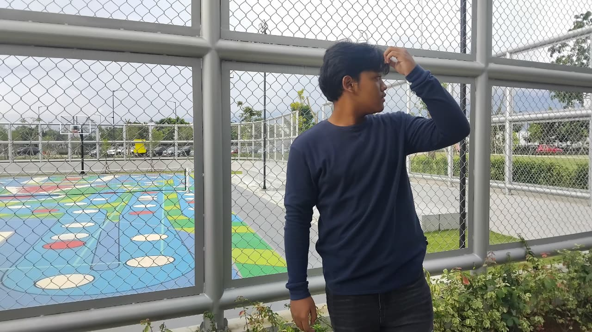

Azra Firansyah
The Most Handsome human ever exist
Namaku Muhammad Azra Firansyah Akbar, Lahir di bandung pada tanggal 16 November 2008, anak ke-6 dari 8 bersaudara, umurku sekarang 17. Hobi aku ada banyak, diantaranya: Dengar musik, Nonton film, Baca Novel klasik. cita cita aku sekarang yaitu menjadi orang yang berpengaruh di kehidupan banyak orang.
ZRA?
Yaa memang azra kebanyakan nama buat perempuan tapi aku suka kok nama aku azra dan aku paling gasuka kalo nama aku diubah kayak jadi boja or smthing.
nah disini aku bakal ngejelasin diriku sendiri sejauh yang aku tau... aku tuh sejak kecil suka banget sama yang film bahkan dulu pas sd aku pulang sekolah tuh sering banget beli dvd bajakan terus nonton sendiri di rumah, dulu tuh aku paling suka ama film genre action kalo ga ya kartu, setelah beranjak dewasa aku suka banget ama genre drama dan romance tapi ga romcom yaa,, aku tuh jatuh cinta ama eternal sunshine of the spotless mind and thats why aku memakai nama joel juga karena aku ngerasa aku ini kayak joel yang berusaha lupa dengan segalanya tapi gamau menghapus memori nya.. selain film aku juga suka banget ama musik awal smp aku dengerin nya lagu lagu skena kayak oasis, blur, arctic monkeys tapi kalo skrg aku sukanya ama Frank Ocean, jeff buckley, the 1975, daniel caesar,tyler,laufey... cukup segitu untuk perkenalan nya.
CITA CITA
Sebenernya dari dulu tuh cita cita aku sering berubah ubah. pas kecil cita cita aku tuh jadi polisi terus kalo sekarang aku maunya jadi dokter.. oh iya aku juga sempet ke campus talk (acara talkshow di universitas pasundan) dari situ aku tertarik buat kuliah tapi masalahnya dari awal smk aku tuh udh ngerencanain buat ausibildung di jerman,, tapi bahasa jerman aku gaada perkembangannya... wish me luck :v
HOBI
Sejauh ini hobi aku masih baca novel ama denger musik dan nonton film, novel yang aku suka tuh novel novel klasik kayak pride and prejudice, wuthering heights, little women, sense and sensebillity, the picture of dorian gray.. tapi kadang juga kalo males baca tuh selesai buku nya bisa nyampe 3 bulan, kalo lagi semangat paling cepet waktu itu tuuhh sekitar seminggu lebih dikit
FAVORITE MUSIC
Beberapa lagu favorit dari penyanyi favorit aku sejauh ini:
- Frank Ocean - Siegfried
- Jeff Buckley - Last Goodbye
- The 1975 - I always wanna die (sometimes)
- Daniel Caesar - Transform
- Laufey - Too little too late
- Tyler, The Creator - Smuckers